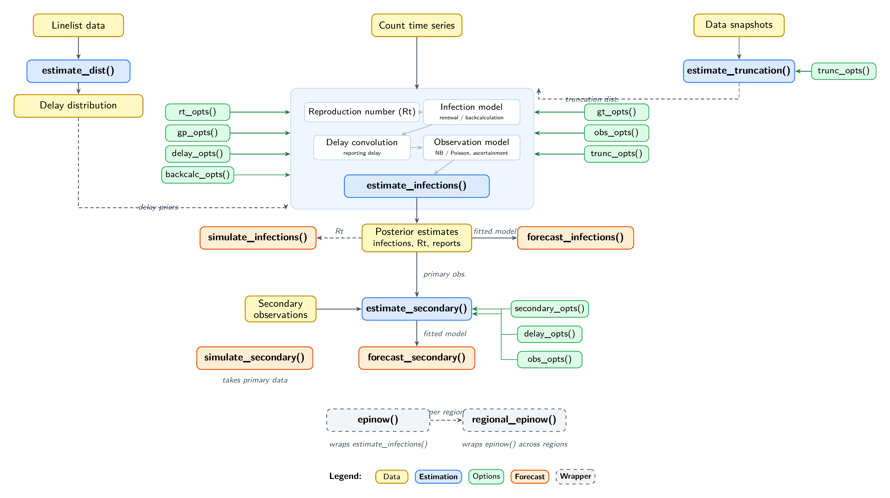

Introduction
EpiNow2 provides several estimation models that can be combined for end-to-end epidemiological inference and forecasting. This vignette gives an overview of how these models connect. For a reference of what each model can do see the model features vignette.
Architecture
The diagram below shows the main functions and how they relate to one another.

Data flows from top to bottom. Solid arrows show direct dependencies; dashed arrows show optional connections. Green boxes are options functions that configure the estimation models. See the model features vignette for what each function and option does.
Relationship between models
estimate_dist() fits delay distributions from linelist
data, accounting for double interval censoring and right truncation. Its
output can define priors for the other models via
delay_opts(), gt_opts(), or
trunc_opts().
estimate_truncation() produces both a nowcast and a
truncation distribution from multiple snapshots of the same data. The
distribution is typically passed to estimate_infections()
via trunc_opts() for truncation-adjusted inference, but can
also be used via delay_opts() or gt_opts()
where appropriate.
estimate_infections() is the core model, estimating
latent infections and the time-varying reproduction number from a count
time series. Its posterior feeds into forecast_infections()
for projections and can inform simulate_infections() for
scenario analysis.
Estimated primary observations from
estimate_infections() are used as input to
estimate_secondary(), which estimates secondary outcomes
(e.g. deaths, hospitalisations). forecast_secondary()
extends a fitted secondary model with new primary data;
simulate_secondary() generates synthetic secondary
observations.
epinow() wraps estimate_infections() with
logging and formatted output. regional_epinow() runs
epinow() across regions in parallel.
Where to look next
Start here
- Getting started — quick introduction and basic usage
- Model features — feature reference for arguments and options
Model definitions (mathematical detail)
-
Infection model —
estimate_infections()- Gaussian process implementation — shared component used inside the renewal and back-calculation models
-
Secondary model —
estimate_secondary() -
Truncation model —
estimate_truncation() -
Distribution model —
estimate_dist()- Understanding delay distributions — conceptual background on delays in EpiNow2
Estimating the reproduction number
- Workflow — end-to-end estimation and forecasting
- Configuration examples — different model configurations with results
- Prior choice guide — default priors and how to modify them
Auxiliary models
-
Fitting delay
distributions — worked example for
estimate_dist() -
Forecasting
multiple data streams — combining
estimate_infections()withforecast_secondary()
Production use
- epinow() and regional_epinow() — wrappers for production runs
Case studies
- External case studies — applications in the literature